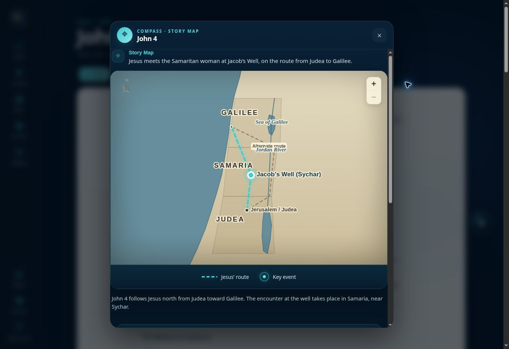

Get oriented first.
Know what is worth watching before you begin.
Project 3|26 gives you the context and guidance to understand Scripture, one chapter at a time.
From confusion to clarity
The right help around each chapter makes its people, places, meaning, and application clearer.
Know what is worth watching before you begin.
Observe the text and interpret it in context.
Ask COMPASS™ about context, geography, and difficult details.
Move from understanding toward prayer and application.
The result is not more information. It is the moment when Scripture starts to make sense.
COMPASS™
Ask questions while the chapter is still in front of you, without leaving the study.
This moment crosses more than one social boundary.
A useful answer needs more than a quick definition. It needs the chapter, the historical setting, and the significance of the encounter working together.
COMPASS™ helps bring those pieces together while you remain in the study.
COMPASS™ is grounded in Project 3|26 content and approved sources.
Context changes what you see
Geography, culture, history, and movement can change how you understand a chapter.

Story maps + research
See why a route mattered, where an event happened, and how the story moved through the land.
A simple daily rhythm
The tools appear when you need them, without making Bible study more complicated.
Simple pricing
Begin with the complete Gospel of John. Upgrade only when you want to continue or bring others with you.
Free John
FreeAll 21 chapters of John with the Project 3|26 chapter experience.
Start John FREEFull Bible Study
$9.97 / monthContinue through all 66 books with studies, COMPASS™, Story Maps, audio where available, and progress.
Start freeLeader + Group
$49.97 / monthUp to 18 seats with Full Bible access, Leader Guides, invitations, and a private group space.
Explore group accessChurchwide
Let’s talkA tailored plan for your church’s size, ministry goals, leaders, and groups.
Explore church accessNo credit card to start John · Cancel paid plans anytime
Why Project 3|26 exists
Project 3|26 was created to give everyday people a clear path through Scripture, one chapter at a time. The technology has grown, but the purpose has not changed: help people understand what they are reading so Scripture can shape how they live.
Dr. Brian CooperFounder, Project 3|26
The goal is not to finish the Bible. The goal is for the Bible to form you.
Understanding is not the finish line. It is what helps you move from reading Scripture to living it.
Start with a complete book
Start John free. When you’re ready, continue through the full Bible for $9.97/month.
Start John FREE No cost to begin · Cancel anytime after upgrading.